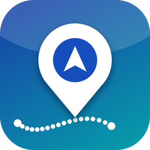
Elblasy Fleet GPS
Live tracking, trips, reports and route playback for every Fleet vehicle — on the Traccar server you already own, inside Odoo, with Odoo's own pivots, graphs and exports.
تتبع حي ورحلات وتقارير وتشغيل مسار لكل مركبة في Fleet، على سيرفر Traccar الخاص بك وداخل أودو
Odoo 20Community & EnterpriseYour own TraccarPhone · tablet · desktopArabic & RTLDark mode149 automated testsLGPL-3
9
reports, all Odoo-native
10 s
live refresh, no push needed
0
extra load on Odoo when the map is closed
149
automated tests, browser included
Take a look
Your fleet on one screen — and in your pocket
Real screens of the module with real vehicles (14 trucks tracked on a live Traccar server). Open a section to see the dark theme and the Arabic, right-to-left interface.
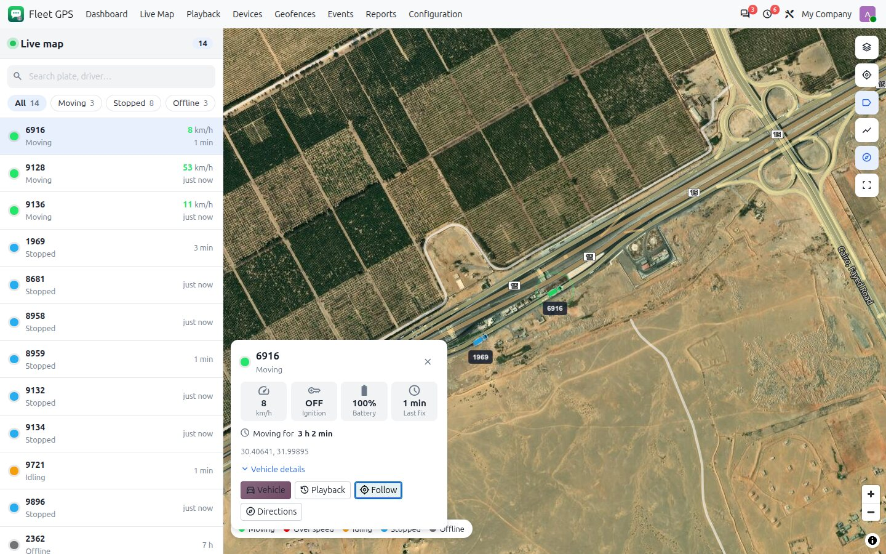
Live map
Satellite, light, dark or terrain maps. Vehicles glide between fixes, the heading arrow turns, plates are labelled and the colour tells the state: moving, over the limit, idling, stopped, offline.
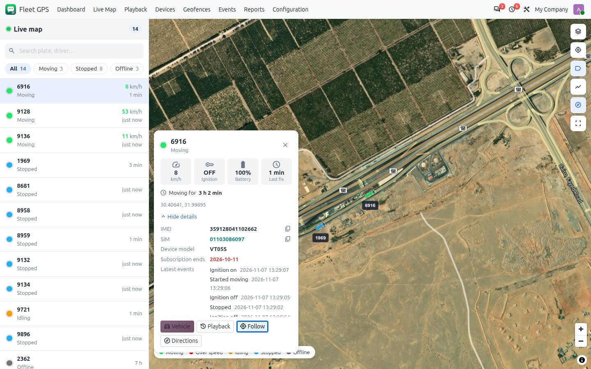
One tap on a vehicle
Speed, ignition, battery, last fix, how long it has been moving or stopped, and why a quiet tracker went quiet. IMEI, SIM and ICCID copy with one tap.
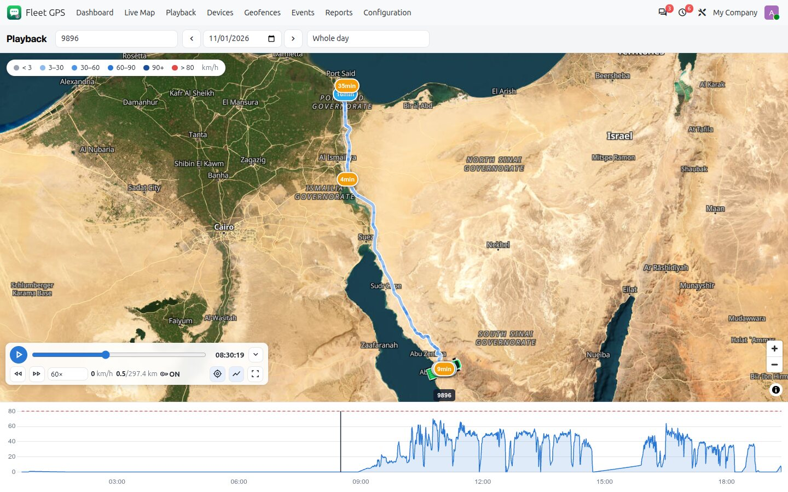
Route playback
The route coloured by speed, with stops, a time-true speed chart and a slim control bar. Hide it or go full screen for more map.
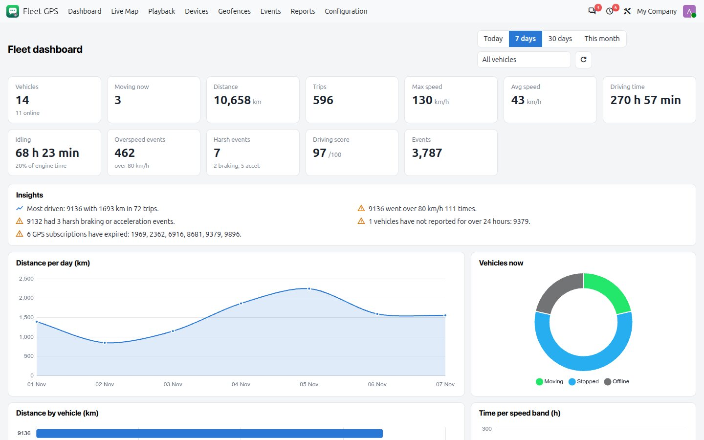
Dashboard
Twelve KPIs, plain-language insights and charts for the last day, week or month — for all vehicles or just one.
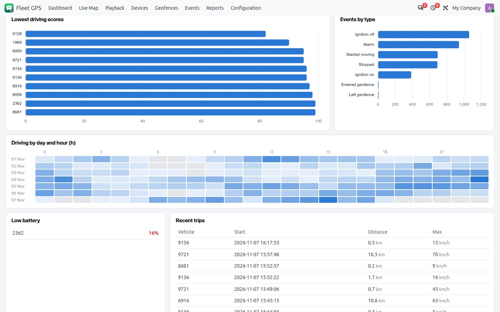
When does the fleet drive?
Hours driven by day and hour, with utilization, speed bands and driving scores.
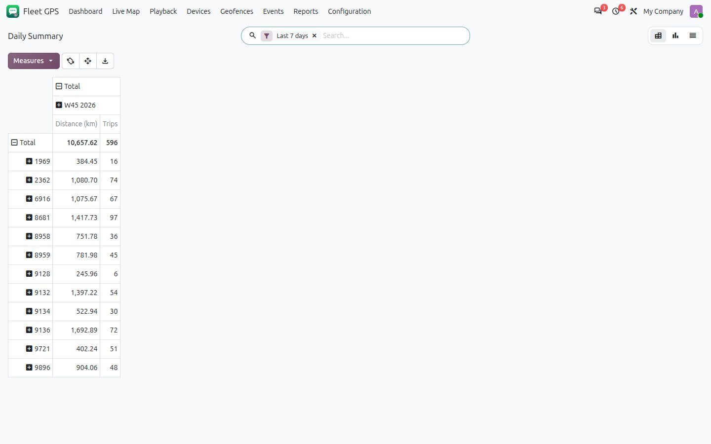
Reports in Odoo's own pivot
Distance, trips, driving and idling time, overspeed and harsh events per vehicle and week. Group, filter, compare periods, export to Excel.
Every theme, every language
Light, dark, Arabic — and every screen size
The same screens in the other themes. Nothing is a separate mode: colours follow Odoo's dark mode and the layout mirrors for right-to-left languages.
Dark mode — follows Odoo's theme
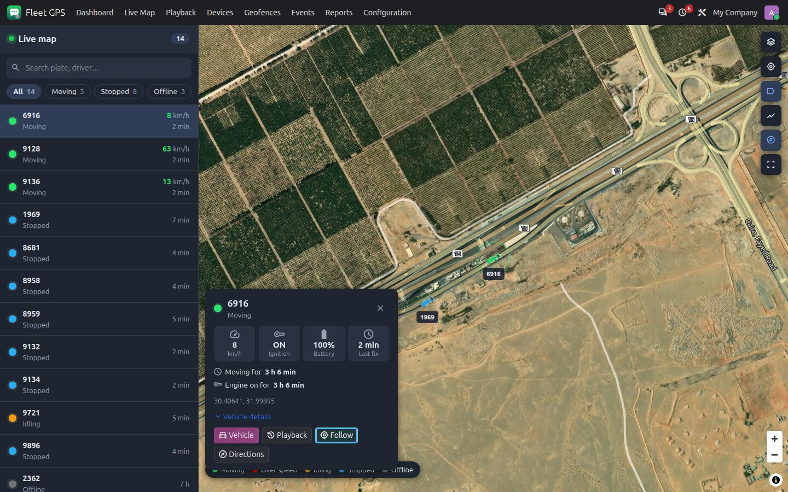
Live map
Readable at night.
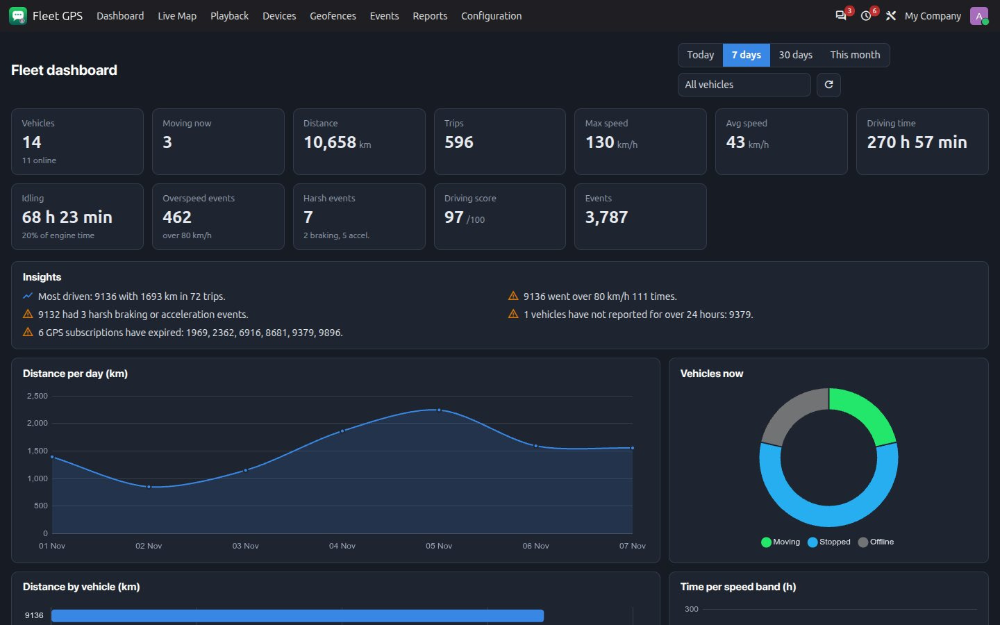
Dashboard
Charts and tiles re-coloured, not inverted.
Arabic, right to left — fully translated
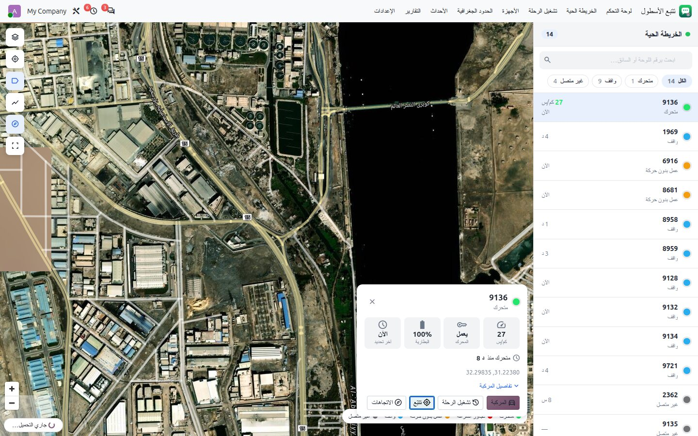
Live map
The list moves to the right, tools to the left; city names are shown in Arabic and joined correctly.
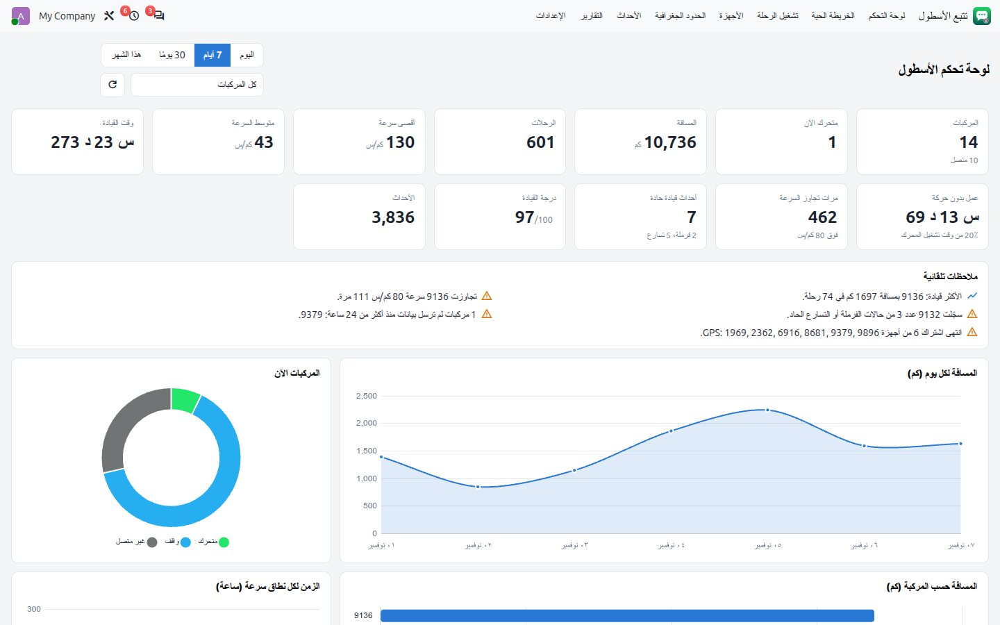
Dashboard
Every label, insight and chart in Arabic.
Phone and tablet — the same app, laid out for touch
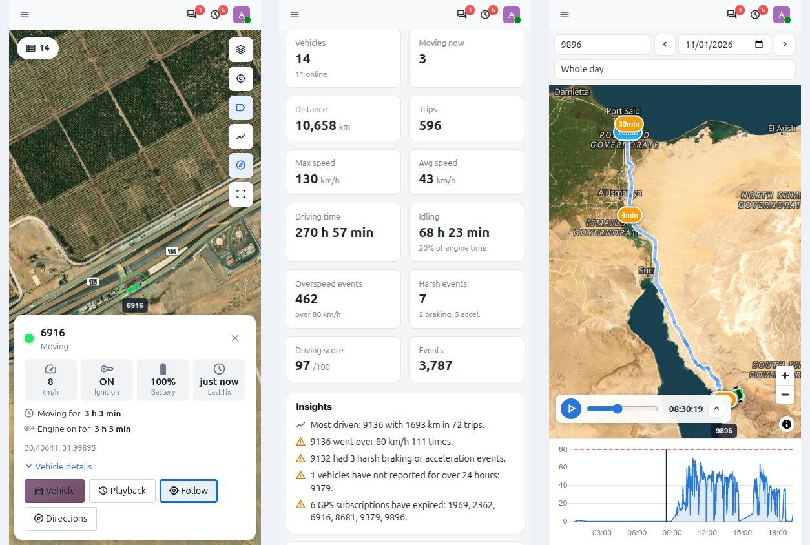
The vehicle list becomes a swipe-up sheet, the vehicle card scrolls inside the screen, playback controls fold to one slim row and the map credits shrink to an (i) button. Checked at 390, 820, 1366 and 1920 px wide — no sideways scrolling on any screen, in either direction of writing.
How it works
Your trackers · your Traccar · your Odoo
Odoo reads Traccar through its standard API. If Traccar can reach Odoo it can also push every position; if it cannot (a local test, a firewall) Odoo pulls by itself, while someone is looking at the map.
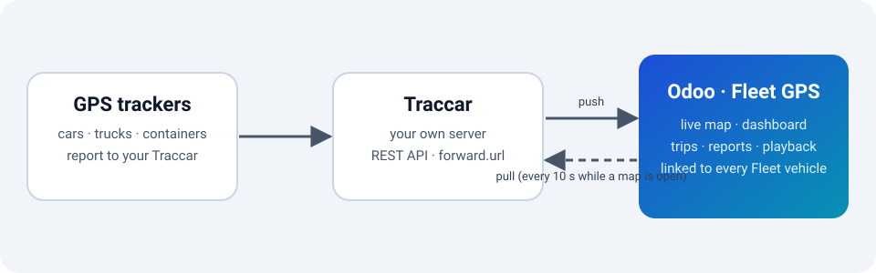
Push or pull
forward.url sends each position the moment Traccar has it. Without it, an open map pulls every 10 seconds and a cron keeps statuses fresh every minute and fills any gap.
Light on Odoo
A position costs about 1 ms to store. The 1 MB map library loads only when the map opens. A hidden tab asks for nothing, and a dead Traccar is never waited on for long.
Yours
Positions stay in your database. Credentials are readable by managers only. Street addresses are off until you switch them on.
Everything in one app
What you get
Open any group.
Live map — like a fleet control room
Four map styles
Satellite with roads and labels, light, dark and terrain. No map key needed.
Smooth movement
Markers glide between fixes and turn with the vehicle. Container trucks are drawn from above and scale with the zoom.
Find fast
Search plate or driver, filter moving / stopped / offline, follow a vehicle, show trails and geofences, fit all.
Colours you choose
Status colours, speed limit and map defaults live in Fleet settings.
Vehicle card — everything about one truck
Since when
Moving or stopped for how long, engine on or off for how long, at this place for how long.
Why is it quiet?
Power cut or empty battery, or healthy power and then silence (likely SIM or coverage).
Registration data
IMEI, SIM (tap to call), ICCID, device model, group, subscription end.
Latest events
The last five events, and the street address if you enable it.
Dashboard — answers before you ask
12 KPIs
Vehicles, moving now, distance, trips, max and average speed, driving and idling time, overspeed, harsh events, score, events.
Insights
Up to eight plain sentences: distance up or down against the previous period, who drove most, who sped, idling too high, vehicles that did not move or stopped reporting, expired subscriptions.
Charts and heat map
Distance per day, status now, distance by vehicle, speed bands, utilization, hour of day, lowest scores, event types, and a day-by-hour heat map.
Reports — Odoo's own tools, no export needed
| Report | What it answers |
|---|
| Daily summary | Distance, trips, driving / idling / stopped hours, max and average speed, overspeed, harsh events, score — per vehicle and day, pivot · graph · list. |
| Trips and stops | Every trip with start, end, distance, speed; every stop with its duration and engine state. |
| Waiting by place | Where vehicles wait and for how long: stops grouped by geofence, or by place within 200 m (yards, queues, customers). |
| Driving behaviour | Overspeed events and hours, harsh braking and acceleration, driving score — worst first. |
| Compare | Vehicle against vehicle, or a period against the previous one, with Odoo's built-in comparison. |
| Events | Ignition, movement, geofence, overspeed, connection and alarms, filterable, with unseen / seen. |
Playback — see exactly what happened
Speed-coloured route
Light to dark blue for faster, red over the limit, grey standing. Stops are marked with their duration.
Controls
Play, pause, jump 5 minutes, six speeds, follow, scrub the slider or click the speed chart.
Any day
Stored days play from Odoo; older days are read from Traccar on the spot.
Fleet link and administration — every GPS device has a vehicle
Linked to Fleet
Devices are matched to vehicles by plate, one-to-one. The vehicle form gets a GPS tab and button; drivers come from Fleet.
Import and write back
Import devices, geofences and colours from Traccar; rename or recolour in Odoo and it is written back.
Subscriptions
Expiry dates from the device, colour-coded lists and one to-do per device 14 days before they end.
Safe by design
Two groups (user, manager), multi-company rules, commands for managers only, and a confirmation before an engine stop.
Get started
Five minutes from install to first map
You need a Traccar server and a Traccar user (email and password, or an API token).
1
Install
Apps → Elblasy Fleet GPS (Traccar). It needs only Fleet, Discuss and Bus; no Enterprise app.
2
Add your server
Fleet GPS → Configuration → Servers → New: the Traccar URL and the token or email and password, then Test Connection.
3
Import devices
Import Devices brings the devices, groups, geofences, colours and subscription dates, and links each device to the vehicle with the same plate.
4
Import history
Configuration → History Import: pick the days (up to 92). It runs in the background; reports fill in as it goes.
5
Optional: push
In traccar.xml set forward.enable, forward.json and forward.url (and the event ones) to the URLs shown on the server form.
Good to know
Requirements and limits
| Topic | Details |
|---|
| Odoo | 20.0, Community or Enterprise (Odoo.sh included). Depends on Fleet, Discuss and Bus. |
| Traccar | Tested with Traccar 6.x. REST API access for one user; push is optional. |
| Data kept | Raw positions 30 days (configurable) and events 180 days; daily summaries, trips and stops are kept. |
| Maps | OpenFreeMap vector tiles, Esri imagery and OpenTopoMap: no key, no sign-up. The browser needs WebGL. |
| Street addresses | Off by default. When enabled, coordinates go to the public OpenStreetMap Nominatim service (cached, one request a second). |
| Languages | English and Arabic (right to left). Other languages can be added with Odoo's usual translation tools. |
| Not included yet | PDF report and scheduled e-mail of reports. |
Questions
Frequently asked
Does it slow Odoo down?
No measurable load: a position is stored in about 1 ms, the map library is downloaded only when the map opens, a closed or hidden screen asks for nothing, and refreshes send only what changed.
Can Traccar not reach my Odoo?
That is fine. While a map is open Odoo pulls every 10 seconds, and a cron keeps statuses fresh every minute. Push is only a bonus for an Odoo that is reachable.
Do I have to use Fleet?
Fleet is the vehicle master, so every device can be linked to a vehicle, a plate and a driver. Reports work even for devices not yet linked.
Can I change a vehicle's name or icon?
Yes, on the device. Name, icon category and map colour are written back to Traccar.
Is it safe to send commands?
Only managers can, every command is logged on the device, and stopping an engine needs an explicit confirmation.
Why does the map show a blank area?
Your browser may lack WebGL, or a firewall blocks the map tile servers. The vehicle list and every report still work.
بالعربية
تتبع الأسطول داخل أودو
الفكرة: أودو يقرأ سيرفر Traccar الخاص بك ويعرض كل مركبة من Fleet على خريطة حية، مع لوحة تحكم وتقارير ورحلات وتشغيل للمسار، بدون أي خدمة سحابية.
الخريطة الحية: أربعة أنواع (قمر صناعي، فاتحة، داكنة، تضاريس)، المركبات تتحرك بسلاسة وتدور مع اتجاهها، وألوان الحالة (متحرك، تجاوز سرعة، عمل بدون حركة، واقف، غير متصل). بطاقة المركبة تعرض منذ متى تتحرك أو تقف، وسبب انقطاع الجهاز، ونسخ IMEI والشريحة بنقرة.
لوحة التحكم: 12 مؤشرًا وملاحظات تلقائية بجمل واضحة (مثل: المسافة ارتفعت 12٪ عن الفترة السابقة)، ورسوم للمسافة والاستغلال والسرعة وساعات القيادة وخريطة حرارية.
التقارير بأدوات أودو: الملخص اليومي، الرحلات، التوقفات، الانتظار حسب المكان، سلوك القيادة، المقارنة بين مركبتين أو فترتين، والأحداث. جدول محوري ورسم وقائمة وتصدير Excel.
تشغيل الرحلة: المسار ملوّن بالسرعة مع علامات التوقف ورسم السرعة وشريط تحكم صغير يمكن طيّه.
الربط والإدارة: كل جهاز مرتبط بمركبة من Fleet، استيراد الأجهزة والحدود الجغرافية من Traccar، تعديل الاسم واللون يرجع إلى Traccar، تنبيه قبل انتهاء الاشتراك، وإرسال أوامر للمديرين فقط مع تأكيد لإيقاف المحرك.
الأداء: لا يبطّئ أودو: تخزين الموقع نحو 1 مللي ثانية، ومكتبة الخريطة لا تُحمَّل إلا عند فتحها، والتبويب المخفي لا يطلب شيئًا. إن تعذّر وصول Traccar إلى أودو فأودو يسحب كل 10 ثوانٍ أثناء فتح الخريطة.
جميع الشاشات: جوال وتابلت وكمبيوتر، ووضع داكن، واتجاه من اليمين لليسار بالكامل.
Made by Elblasy.app · Odoo 20 · LGPL-3 · Traccar is an open-source project; this module is not affiliated with it. Maps © OpenStreetMap contributors, OpenFreeMap, Esri.